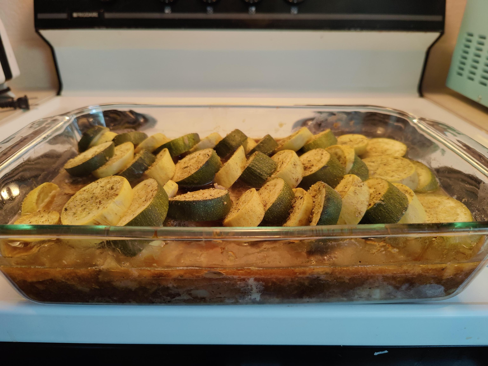
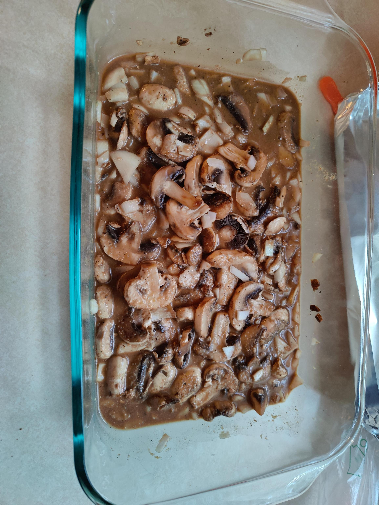
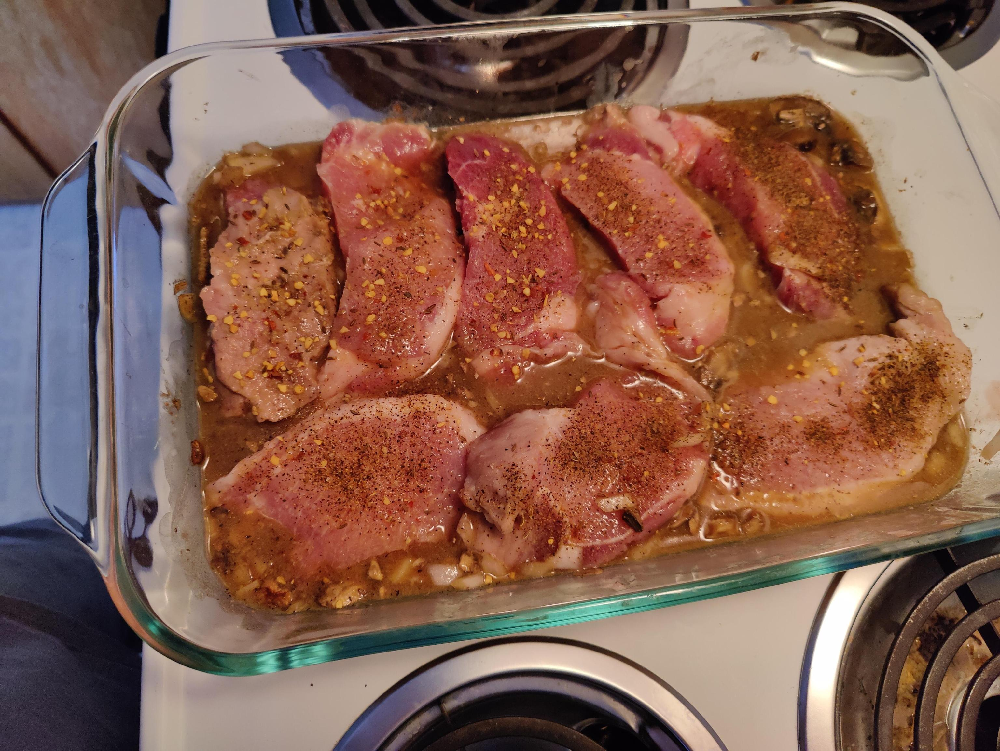
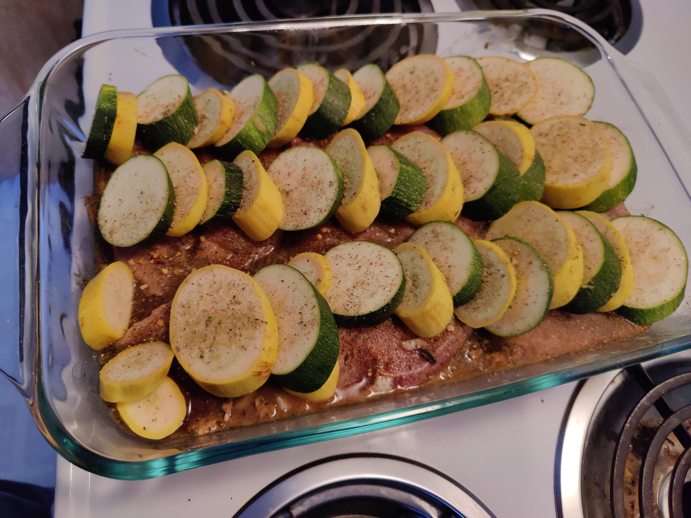

Home
Savory Brown Mushroom Tat Tooie

ingredients
mushrooms
pork chops
yellow squash
zuchini for vibrance
mushroom gravy mix, one or two packets depending on preferance
onion (kinda optional)
spices
onion powder
black pepper
garlic and herb seasoning
Prep
preheat oven to 350
get a deep pan for layering the ingredients
Step1
chop an onion up, or use onion powder, and add to pan
add mushroom gravy. a splash of water to just mix the gravy into a paste.
add the mushrooms.

Step2

Step3
